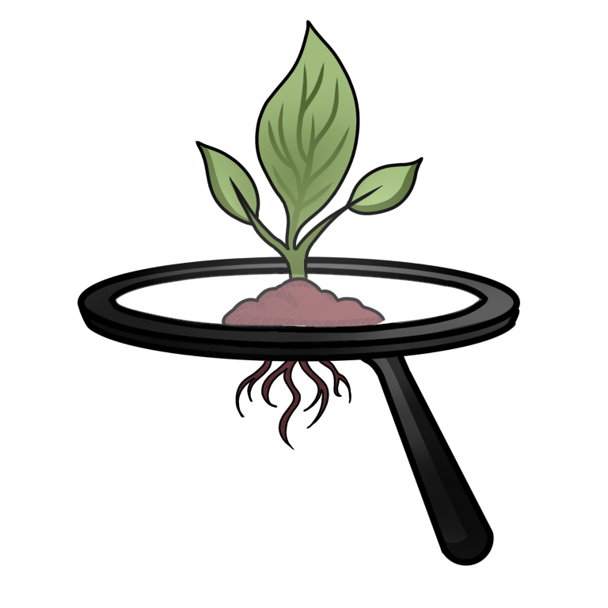
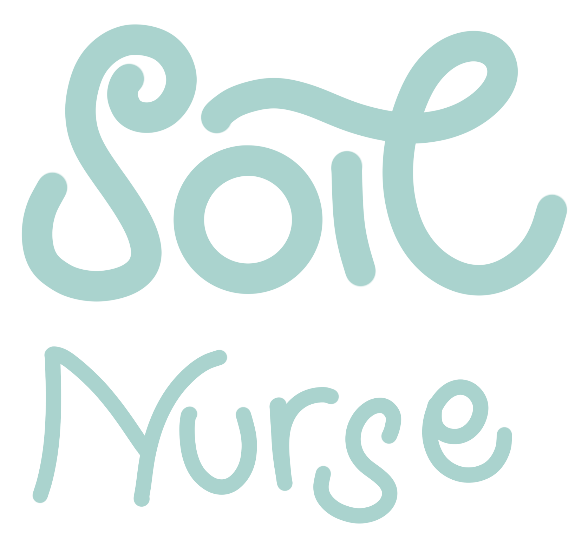

N
-
Nitrogen belum discan


Scanner
Scan warna indikator lewat kamera, contoh warna, atau gambar.
Warna terbaca
RGB belum tersedia
Arahkan kotak tengah ke warna indikator NPK/pH, lalu tekan Scan.
Nitrogen belum discan
Kalium belum discan
Fosfor belum discan
pH belum discan
Chilli
Cocok untuk tanah hangat dengan pH sedikit asam sampai netral.
How to plant chilli?
Gunakan bedengan gembur, beri kompos matang, jaga kelembapan, dan pastikan sinar matahari cukup.